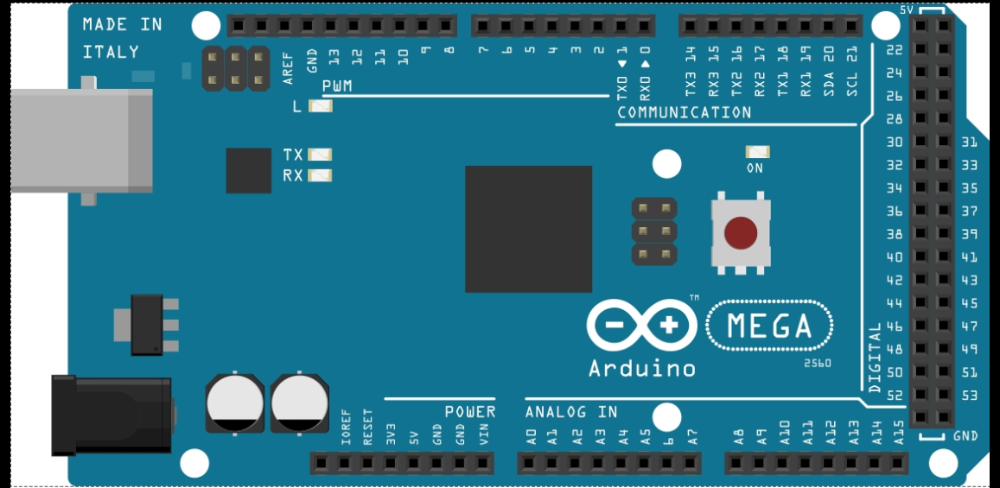

Arduino es una plataforma de desarrollo electrónico de código abierto basada en hardware y software libres, creada para facilitar el diseño, prototipado y construcción de proyectos interactivos. Combina de forma accesible el mundo de la programación con la electrónica, permitiendo que tanto estudiantes como profesionales desarrollen desde proyectos escolares sencillos hasta sistemas de automatización industrial.
El funcionamiento de una placa Arduino se basa en la lectura de entradas y la activación de salidas:
·Paso 1 (Entrada): La placa recibe información del entorno a través de sensores (como sensores de luz, temperatura, presencia o botones).
·Paso 2 (Procesamiento): El cerebro de la placa procesa esos datos según el código de programación que el usuario haya guardado en su memoria.
·Paso 3 (Salida): Ejecuta una acción concreta enviando señales a actuadores (como encender una luz LED, activar un motor o mostrar un mensaje en una pantalla).
La gran popularidad de Arduino se debe a su bajo costo, la enorme cantidad de librerías disponibles y su facilidad de uso. Entre sus aplicaciones más habituales se encuentran:
·Robótica Educativa: Creación de carritos esquiva-obstáculos y brazos robóticos.
·Domótica: Automatización del hogar (como encendido automático de luces o alarmas).
·Internet de las Cosas (IoT): Control y monitoreo de dispositivos a través de redes.
Trabajo realizado por Martina Seri de 4B